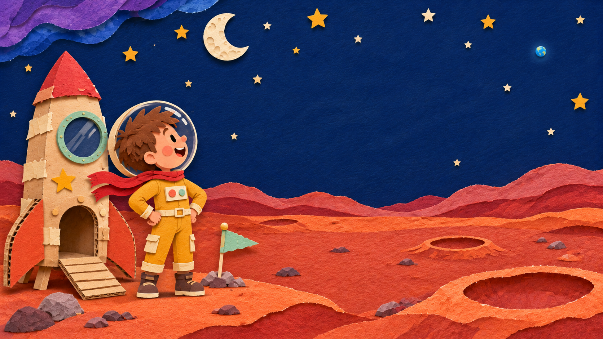

Page 6 of 786%
PAGE 6 · ARRIVAL
Mars was real.
Johnny climbed out of the rocket. He looked at the dusty ground and the wide sky. He had really made it.
Explore the planet Press both “Explore crater” buttons in the picture.
0 of 2 craters explored.